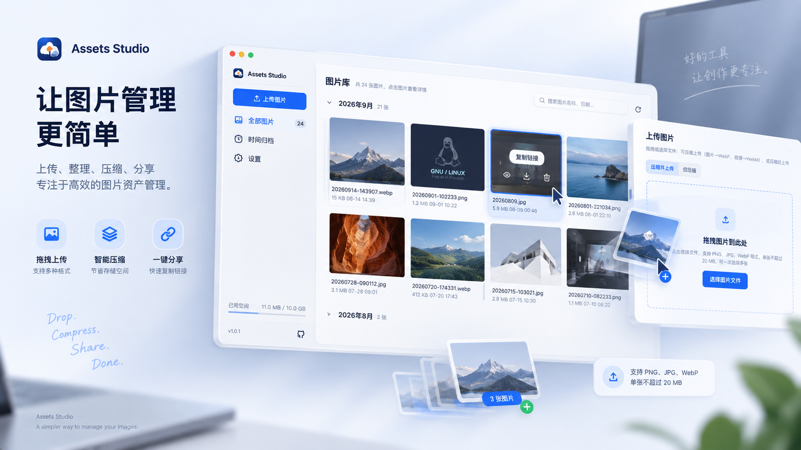

Windows
通过 GitHub Releases 获取安装包

好的工具，不应该让你花时间管理工具本身。
图片进入应用窗口。支持 PNG、JPG、WebP。
Rust 自动优化并转为 WebP，无需手动处理。
自动上传，Markdown / URL 已在剪贴板。
安装包托管在 GitHub Releases，选择你的平台即可开始。
通过 GitHub Releases 获取安装包
通过 GitHub Releases 获取安装包
也可以前往 全部 Releases 选择历史版本。